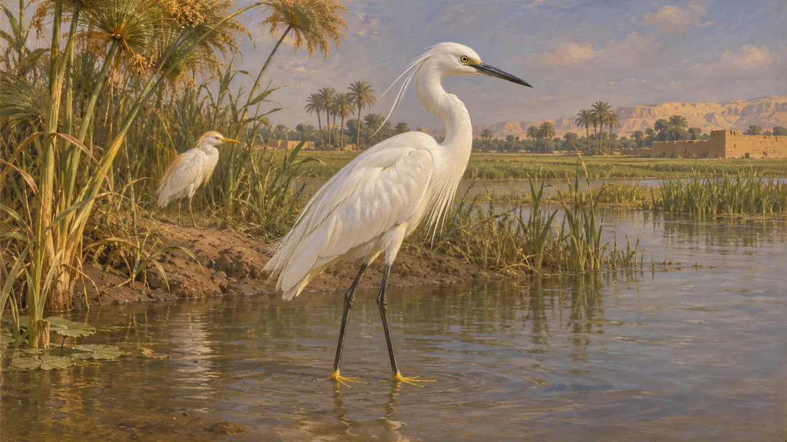
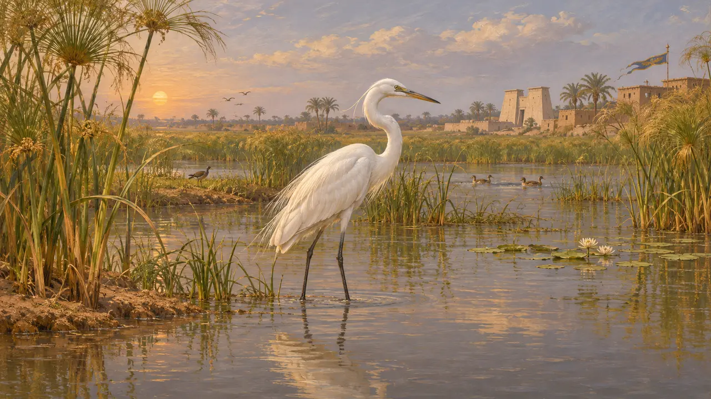
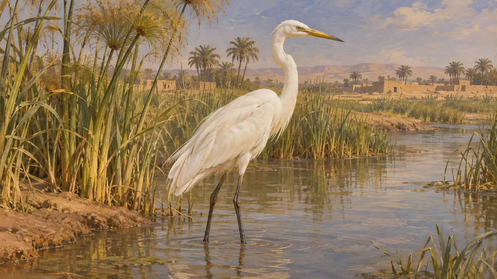
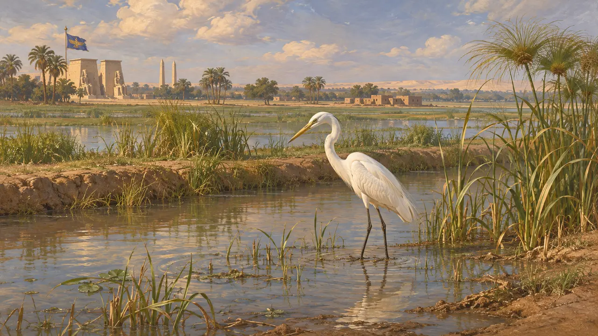

Ansiklopedi › Yaban hayatı ve hava koşulları

Ak balıkçıl
Nil bataklıklarının ve kanallarının beyaz uzun bacaklı su kuşu, Pers egemenliğindeki Mısır, MÖ 525
Oyunda: Bölüm 2: Mızrak Taşıyıcı
Ak balıkçıllar, sığ suda beslenen beyaz balıkçıllardır; Mısır'da Nil boyunca, kanallarında ve sular altında kalan tarlalarda yaşarlardı. Pers döneminden günümüze ulaşan hiçbir kaynak ak balıkçıldan söz etmez; bu yüzden söylenebilecekler Mısır kuş sanatına ve Nil vadisinin doğal ortamına dayanır.
Oyunda: Oyun, yalnızca Memfis bölümünde gökyüzünde uçan kuşlar olarak ak balıkçıllar çizer. Yalnızca dekordurlar: hiçbir kural onları dikkate almaz ve oynanışa etkileri yoktur.

Nil kıyısının kuşu
TartışmalıKüçük ak balıkçıl ve sığır balıkçılı dahil birkaç beyaz balıkçıl türü Nil vadisinde yaşar ve eski Mısırlılar muhtemelen hepsini tanırdı. Balıkçıllar ile ak balıkçıllar benzer biçimlerde çizildiği için, bir sanatçının belirli bir resimde hangi türü kastettiği çoğu zaman belirsizdir. Modern doğa bilimciler ve Mısırbilimciler bu tanımlamalar konusunda her zaman hemfikir değildir.
P. F. Houlihan, The Birds of Ancient Egypt, 1986

Mısır sanatında kuşlar
BelgelerdeBirçok yüzyıla ait Mısır mezar resimleri ve kabartmaları, papirüs sazlıklarında avlanan ya da yalnızca gözlenen bataklık kuşlarını gösterir; balıkçıllar da bunların arasındadır. Bu görüntüler, Nil bataklıklarının Persler gelmeden çok önce yabani su kuşlarıyla zengin olduğunu gösterir. Ortamın bir resmini verirler, ancak hiçbiri ak balıkçılı MÖ 525'e tarihlemez.
P. F. Houlihan, The Birds of Ancient Egypt, 1986

Herodotos'a göre Mısır hayvanları
Antik anlatıHerodotos, Mısırlıların bazı hayvanları kutsal saydığını anlatır ve kuşları arasında ibisi anar. Doğrulanabildiği kadarıyla ak balıkçılı ayrıca anmaz. Perslerin özellikle ak balıkçılı fark ettiği iddiasının onun metninde hiçbir dayanağı yoktur.
Herodotus 2.65

Memfis çevresindeki ortam
Antik anlatıHerodotos, Nil'in her yıl ülkeyi su altında bıraktığını ve Mısırlıların nehrin yükselip alçalmasına göre yaşadığını söyler. Delta'nın ve Memfis bölgesinin bataklıkları ve kanalları o zaman su kuşlarını çekmiş olmalıdır; bu bir çıkarımdır, onun aktardığı bir şey değildir. Hiçbir kaynak belirli bir ak balıkçıl sürüsünü anlatmaz.
Herodotus 2.14
Kaynaklar
- P. F. Houlihan, The Birds of Ancient Egypt, 1986
- Herodotus 2.65
- Herodotus 2.14